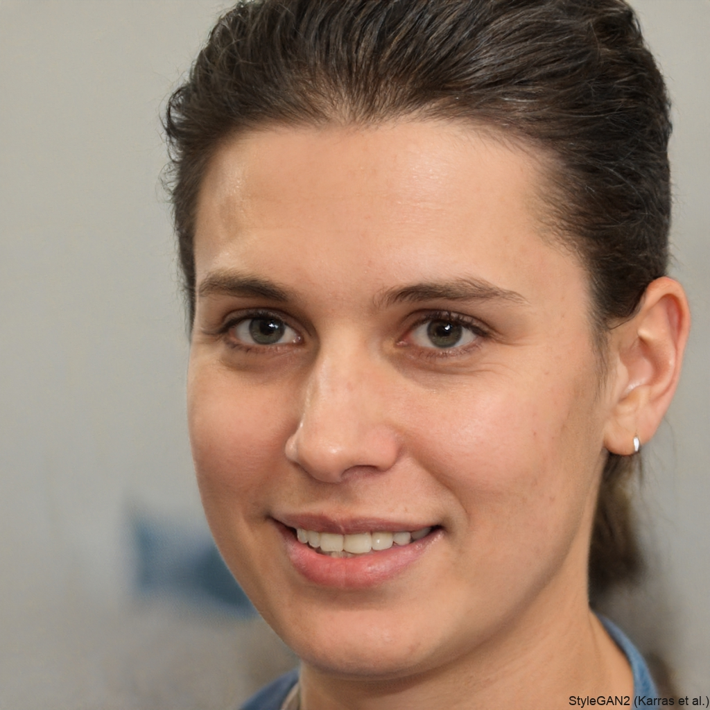

Alyssa Cauton

Summary
I’m a self-taught person who believes there’s always room to improve
your skills and find better ways to do the same thing..
Education
-
Master os Science Computer Science
University of California, Berkeley
August 2019 - May 2021
-
Bachelor of Engineering in Electrical Engineering
University of Toronto
September 2015 – June 2019
-
High School Diploma
St. Michael's Preparatory School, Chicago
Graduated: June 2015
Work Experience
-
Software Enginer InnovaTech Solutions New York, NY
March 2022 - Present
- Designed and implemented RESTful APIs used by over 1 million users monthly
- Led migration of legacy systems to a microservices architecture
- Collaborated with frontend teams to deliver seamless user experiences
- Mentored two junior developers on backend best practices
Skills
- Programming Languages: JavaScript, Python, TypeScript, SQL, Bash
- Web Development: HTML5, CSS3, React, Next.js, Node.js, Express
- Databases: PostgreSQL, MongoDB, Firebase, MySQL
- DevOps & Tools: Git, Docker, GitHub Actions, Nginx, Linux, VS Code
- Cloud & Hosting: AWS (EC2, S3), Vercel, Netlify